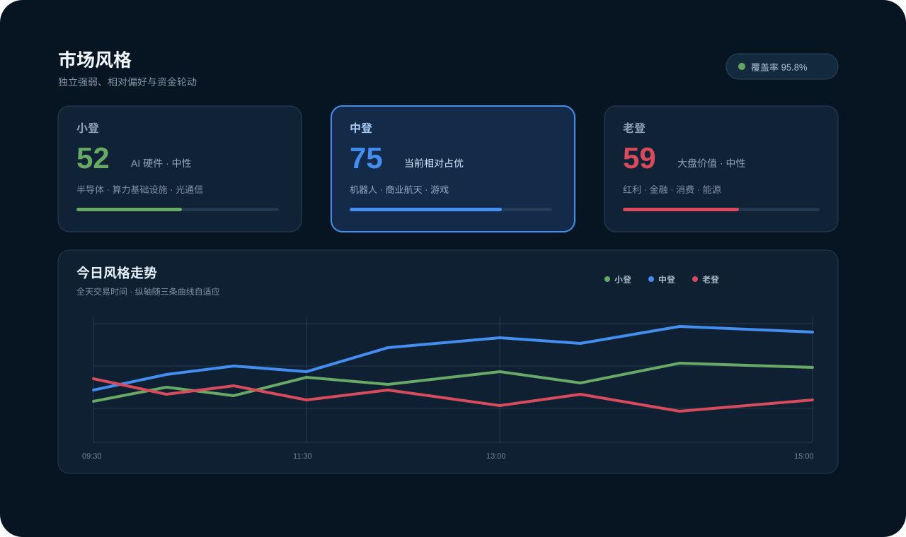

托盘图标
安静常驻，行情与盈亏状态随时可见。
Windows 托盘里的 A 股行情助手
StockTray 安静待在系统托盘。点击出现，移开自动隐藏；
不用切换页面，也不占用你的桌面。
v0.2.20 · 免费 · 开源 · 数据留在本机
鼠标移开 1.5s 后隐藏
点击 ST 托盘图标试试：出现、看完、自动隐藏。
01 / TRAY WORKFLOW
打开快、看得全、藏得快，不打断当前工作流。
安静常驻，行情与盈亏状态随时可见。
价格、涨跌幅与当日盈亏，一眼看完。
鼠标移开后收回托盘，继续手上的事。
02 / ONE GLANCE
自选与持仓
自由选择最新价、涨跌幅、量比、换手率、持仓盈亏等字段。弹窗只完整显示两只股票，其余向下滚动，不用把窗口撑满屏幕。
轻量交互
支持悬停保持、0.1 秒颗粒度自动隐藏和紧凑布局。需要时出现，不需要时安静消失。
动态托盘
托盘图标跟随总持仓盈亏改变状态，左键看行情，右键进入功能菜单。
03 / MARKET STYLE
市场风格不是产品的负担，而是托盘里顺手多看的一层判断：今天是谁在拉升，资金又在往哪里轮动。

04 / YOUR DATA
东方财富、腾讯与自建富途 OpenD 按拖动顺序读取，失败时自动降级。
按交易日保存风格分析与趋势点，随时统计占用、查看或清理。
没有账号体系。自选、持仓、成本与偏好保存在你的电脑里。
STOCKTRAY v0.2.20
适用于 Windows 10 / 11 · x64 · GPL-3.0-or-later